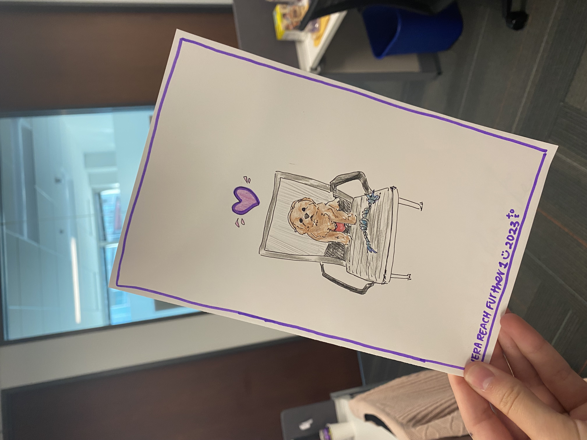

REACH, LAMAT, and REU Programs
CIERA has amazing summer research programs both at the high school (REACH) and undergraduate (REU) levels. In my first summer as a graduate student, I co-mentored Isabella, a bright high school student from Chicago. I designed a three-week research project with her, which culminated in a scientific presentation. The following year, I became the mentor coordinator for REACH, where I guided graduate students in designing effective projects and mentoring relationships. This was incredibly rewarding, as not only did I get to closely follow the progress of all of the REACH students, but I also learned a lot about different mentoring styles. I wanted to make an impact on students with similar backgrounds to me, so I later became a mentor for the LAMAT program at UC Santa Cruz, where I co-mentored a talented undergraduate student.
